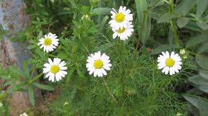
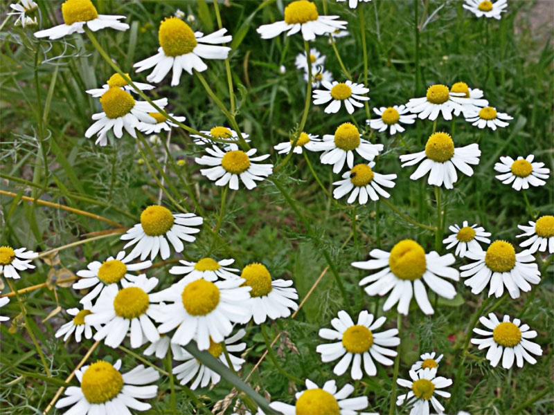
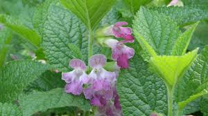
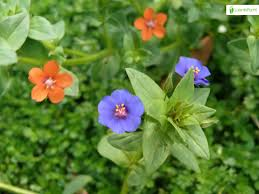
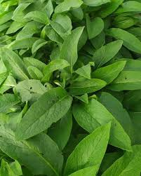
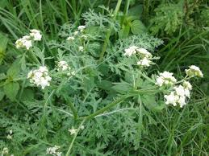
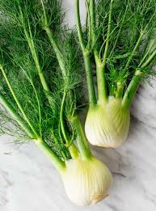

Romero

Manzanilla Amarga

Manzanilla Dulce

Toronjil

Pimpinela

Suelda con suelda

Altamisa
Caléndula

Poleo

Haz clic en una planta para ver su información completa.
Infusión: 2–3 ramas en 1 L de agua caliente, reposar 10 min.
Baño medicinal: Poner un puñado grande en agua hervida.
"El romero es de las plantas que siempre se tiene en la casa. Sirve para muchas cosas. Para infecciones vaginales es muy bueno, y también para eliminar hongos."
Nombre Científico: Matricaria chamomilla / recutita
Familia: Asteraceae
Dolores fuertes de estómago, cólicos y gastritis.
Infusión concentrada con flores secas o frescas.
⚠️ Usar con moderación por su potencia.
"La manzanilla amarga es para cuando el dolor es muy bravo. Es fuerte, pero cura."
Nombre Científico: Chamaemelum nobile (Manzanilla romana
Familia: Asteraceae
Para el proceso de parto
Dolores estomacales suaves
⚠️ Usar con moderación por su potencia.
""Tanto tomada como bañada es útil para el proceso de parto, e incluso es benéfica para sacar fríos de la matriz." "Es buena para baños para el bebé. También para ayudar a dilatar cuando se va dar a luz." "
Nombre Científico: Melissa officinalis
Familia: Lamiaceae
Bueno para el corazón
Dolor muscular
Infusión básica:
⚠️ Puede dar sueño (no conducir después)
"Leche hervida con toronjil es útil para el dolor muscular y para el relajamiento. También es bueno para el corazón.
Nombre Científico: Pimpinella anisum
Infusión
"Buena para el corazón. Mejor que el toronjil.""
Nombre Científico: Pimpinella anisum
Infusión
"Buena para el corazón. Mejor que el toronjil.""
Nombre Científico: Ambrosia peruviana o Tanacetum parthenium
Baños cálidos medicinales
Para la buena suerte
Preparación
"Utilizada para baños cálidos, ayuda a la buena suerte."
Nombre Científico: Calendula officinalis
"La flor de caléndula en baños, es medicinal para los golpes. También la flor hervida en leche para curar la úlcera."
Nombre Científico: Mentha pulegiums
"Papayuela, flor de borraja y poleo para tratar la gripe y subir defensas."
Nombre Científico: Foeniculum vulgare
"En agua de panela con leche ayuda a la bajada de leche materna." "En baños útil para mejorar el sueño de los bebés." "Menta e hinojo en aromática son buenos para tratar el colon. Además, alivia la indigestión y la distensión."